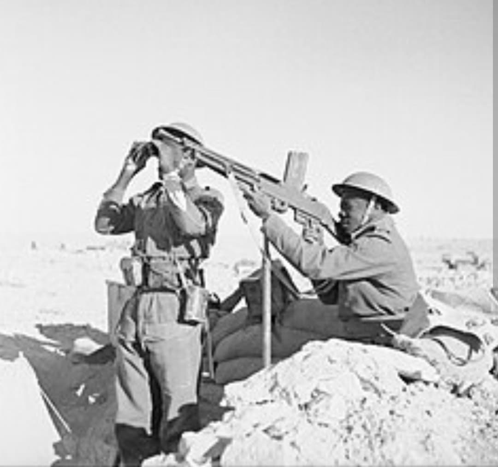
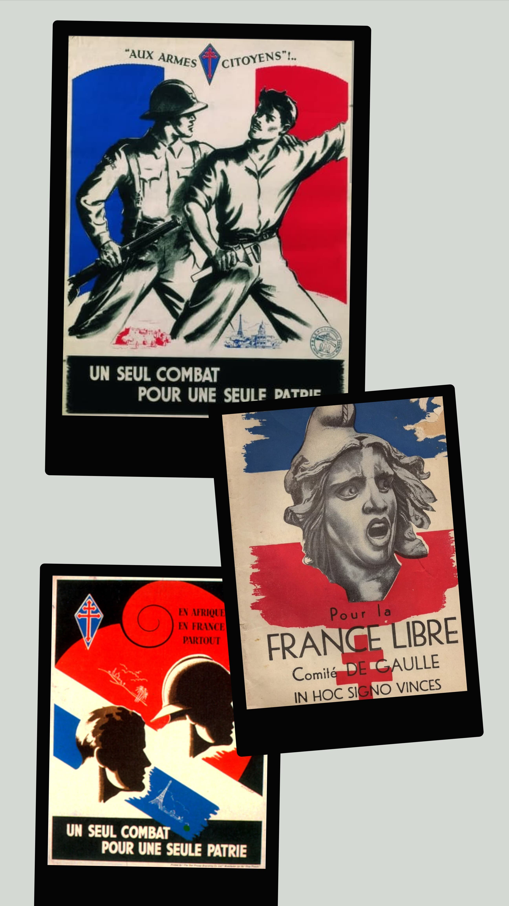
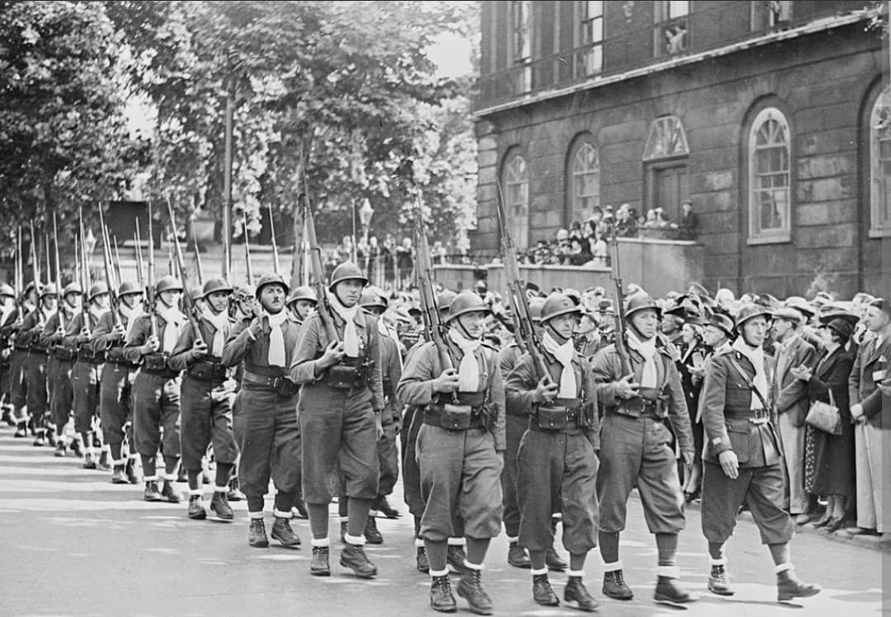

L'honneur retrouvé de la France : de l'Appel du 18 juin aux épopées héroïques du désert, de Bir Hakeim et du retour sur le sol national

Les Forces françaises libres (FFL) désignent l'ensemble des unités militaires, navales et aériennes qui ont refusé la défaite en juin 1940 et ont répondu à l'appel du général de Gaulle pour continuer le combat aux côtés des Alliés.
Rassemblant des soldats de métropole, des territoires coloniaux et des volontaires venus du monde entier, les FFL ont incarné la légitimité et l'honneur de la France dans les heures les plus sombres du conflit, s'illustrant de l'Afrique équatoriale aux déserts libyens, en Italie et lors de la libération du territoire métropolitain.
Dès le lendemain de l'Appel du 18 juin 1940, le général de Gaulle pose les bases des Forces françaises libres à Londres. Progressivement, des garnisons entières ralliées dans l'Empire (comme au Tchad avec le colonel Félix Eboué), des marins et des aviateurs rejoignent l'étendard tricolore.
Leur emblème universel devient la **Croix de Lorraine**, choisie par le général de Gaulle pour symboliser la pureté et la force de la résistance française face à la croix gammée nazie.

Les FFL s'illustrent d'abord en Afrique (gabon, Érythrée, Syrie) avant d'écrire l'une des pages les plus glorieuses de leur histoire au printemps 1942 en Libye.
Durant la **bataille de Bir Hakeim**, la 1re Brigade française libre du général **Marie-Pierre Kœnig** résiste héroïquement pendant seize jours aux assauts furieux des divisions blindées de Rommel et de l'aviation italienne. En tenant tête à l'ennemi contre toute attente, les FFL permettent à la 8e armée britannique de se ressaisir, gagnant l'admiration du monde entier.

En 1943, après la reconquête de l'Afrique du Nord, les Forces françaises libres fusionnent avec l'Armée d'Afrique commandée par le général Giraud pour former l'**Armée française de la Libération**.
Structurées en de puissantes grandes unités régulières (telles que la 1re DFL, la 2e DB du général Leclerc ou la 1ère Armée de Lattre de Tassigny), elles participent activement à la campagne d'Italie, au débarquement de Provence, à la libération de Strasbourg et de Paris, et franchissent le Rhin pour s'enfoncer au cœur de l'Allemagne jusqu'en mai 1945.
Page du Musée HOP WW2 – Section Unités & Divisions